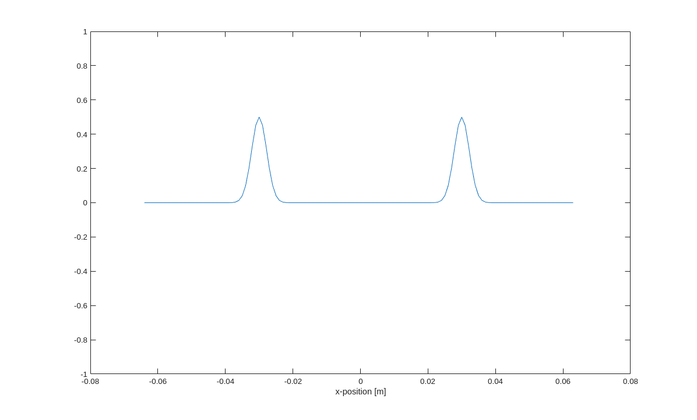

Acoustic Solver example
Contents
Overview
This example demonstrates how to construct and run a variety of simple problems using the acoustic solver in k-Wave II. From constructing the grid, building the Acooustic Medium, setting initial conditions and running the code.
Within this example are commented alternative versions, marked by indents. These can be uncommented or commented out respectively. This Example is broken down into the following Sections. * Setup * Running the AcousticSolver and outputs * Including Absorption
See Also: * kwave.tutorials.initialvalueproblems.homogeneousMedium2D
Setup
As with the other Initial Value Problem solvers in k-Wave II the AcousticSolver requires four main inputs. * The Grid * The Medium * The Source * The Sensors (optional) In this tutorial only the first three are covered.
First we required access to the classes and functions of the k-Wave II toolbox.
clearvars; import kwave.toolbox.* % The grid is defined by calling the Grid(Inputs) function, this will % define the computational space the problem exists on. The inputs for the % Grid are: % * The number of grid points % * The distance between grid points in meters [m] % * Size of the PML (optional) % Example A gives a 1D domain without a PML % Example B uses a 2D domain with different spacing between gridpoints % Example C uses a 3D domain with the same size grid spacing in each % dimension. % Example D uses a 2D domain with a PML only in the y direction. % Example E uses a 3D domain with a PML of the same size in each % dimension. % ========================================================================= % A) Nx=128; % Number of grid points dx=1e-3; % Distance between grid points [m] kgrid = Grid(Nx, dx); % Construct the grid. % % B) % Nx=128; % Number of x grid points % Ny=54; % Number of y grid points % dx=1e-3; % Distance between grid points in the first dimension [m] % dy=5e-4; % Distance between grid points in the second dimension [m] % kgrid = Grid([Nx,Ny], [dx,dy]); % Construct the grid. % % C) % Nx=128; % Number of x grid points % Ny=54; % Number of y grid points % Nz=129; % Number of z grid points % dx=1e-3; % Distance between grid points in any dimension [m] % kgrid = Grid([Nx,Ny, Nz], dx); % Construct the grid. % % D) % PMLx=0; % Number of Grid points either side of the domain for the PML in the x direction % PMLy=20; % Number of Grid points either side of the domain for the PML in the y direction % kgrid = Grid([128,128], 1e-3,[PMLx,PMLy]); % Construct the grid. % % E) % kgrid = Grid([128,64,64], 1e-3,20); % Construct the grid. % % ========================================================================= % With the grid we are now required to construct the Medium and the Source. % In k-wave-II for the AcousticSolver the medium can be constructed in two % ways, through the AcousticMedium class, or through the Medium class. We % will only cover the former in this example. % The Acoustic Medium Class is constructed by calling it with the grid. % Note that this call is the same irrespective of the specific grid % properties. medium=AcousticMedium(kgrid); % In order to run the AcousticSolver two properties must be defined within % the AcousticMedium. The Sound Speed. And the Mean density. These can be % called either as constants across the entire domain, or defined on the % grid for this example we will remain homogeneous. As such the following % Commands can either be called c0=1500; % meters per second. [m s^{-1}] rho0=100; % kilogram per meter^3 [kg m^{-3}] % ========================================================================= % medium.soundSpeed=c0; % Sets the sound speed everywhere. medium.density=rho0; % Sets the density everywhere. % % % medium.soundSpeed=ones(kgrid.gridSize)*c0; % medium.density=ones(kgrid.gridSize)*rho0; % % ========================================================================= % If you wish to consider an inhomogeneous domain the values of the % soundSpeed and the Density must be changed directly and take the size of % the grid. % For the AcousticSource there is only one property that is required. The % Initial Pressure. This is also defined on the grid. source=AcousticSource(kgrid); % The initial pressure is set manually. In this case we will set it to take % the form of a bell curve. source.initialPressure=exp( -(kgrid.x.^2 + kgrid.y.^2 + kgrid.z.^2)/ (10*kgrid.dx^2)); % It is worth noting that the commands kgrid.x, kgrid.y and kgrid.z are % defined irrespective of the grid dimensions (1,2,3), and these will all % be either scalar or the size of the grid. % % As an additional optionthe initial Velocity can also be defined. In % general the problem defaults the initial Veelocity to be 0 at time t=0. % % If a velocity profile is given it is given as a gridField Vector, that is % a 4D Array of size (kgrid.Nx,kgrid.Ny,Kgrid.Nz,kgrid.dimensions). Ny and % Nz default to 1 when the problem is only 1D, or 2D for Nz. % kgrid.dimensions takes the values 1,2 or 3, and indicate the variable in % that dimensional direction. % ========================================================================= % % source.initialVelocity=zeros([kgrid.gridSize,kgrid.dimensions]); % Ensures the initial velocity is the correct size. % source.initialVelocity(:,:,:,1) = (1./(c0.*rho0)).*exp( -(kgrid.x.^2)/ (10*kgrid.dx^2)); % The velocity in the x direction % % In this example the initial velocity in the y and z directions will % be 0, such that the above lines of code will be valid irrespective of % the starting domain. % The initial velocity given must be defined as the velocity at each of % the grid points at the time t=0, exactly as for the initialPressure. % This is contrary to the outputs of the Acoustic Solver. This is % detailed later. % =========================================================================
Running the AcousticSolver and outputs
% In order to run the acoustiSolver we are required to initialise % the AcousticSolver and call the run function. The input for the acoustic % solver are, as previously highlighted; The grid. The medium. And the % source. The Sensor is an option input not coered in this example. % Additionally, settings may be given the AcousticSolver. We also do not % cover this here. solver=AcousticSolver(kgrid,medium,source,[]); % To run the solver we need to only call the run function, which takes % inputs of the Number of time steps and the size of the time steps. Also % the CFL and endtime may be given, but this is not given here. % run is called as follows dt1=1e-7; Nt1=200; % ========================================================================= % solver.run(Nt=Nt1,dt=dt1); % % Calling this function again with the same or different values of Nt and % dt will continue the simulation from the end point of the previous call % of run. For example the following will produce the same result as above; % % solver.run(Nt=0,dt=dt1); % solver.run(Nt=50,dt=dt1); % solver.run(Nt=150,dt=dt1); % solver.run(Nt=0,dt=dt1); % % ========================================================================= % % Calling the run function with Nt=0 will not run any additional time % steps, or if no time steps have been performed, will just initialise the % problem. % The resulting AcousticSolver class, solver, will contain the following % output properties of importance % * solver.pressure % A grid size array % * solver.densitySplit % A 4D gridfield vector % * solver.velocity % A 4D gridfield vector % * solver.timeArray % A vector of length (Nt+1) % These will be, respectively; % The pressure perturbation at the end time (Nt*dt) at the grid points. % The density at each point on the grid at the final time, split into directional % co-ordinates. The true density perturbation is retuned by summing across the % 4th dimension. % The velocity in each of the co-ordinate directions, evaluated not on the % grid points but at the offset half way points between the grid points in % each direction. Additionally the velocity is evaluated at time % (Nt+0.5)*dt. This is due to the staggered spacial and temporal grid used % for each time step. % The time points used in the compuation of the pressure, including time % t=0.
Calling kwave.toolbox.AcousticSolver.run... Input grid size: 128 grid points (128mm) dt: 100ns, end time: 20us, time steps: 200 run completed in 4.3562s

Including Absorption.
in order to include abosrption in the problem there are three additional steps. * Define the absorption coefficient * Define the absorption power * Turn on the absorption within the solver. Just as before with the medium.soundSpeed and medium.density the abosrption coefficient is defined as a scalar on the grid, either as a constant value, or as a grid sized variable.
alpha0= 0.5; % ========================================================================= % medium.absorptionCoeff=alpha0; % % % medium.absorptionCoeff=ones(kgrid.gridSize)*alpha0; % % ========================================================================= % unlike the absorption coefficient the absorption power on the pother hand % must be a scalar value. The code will not run correctly for a non-scalar % absorptionPower due to limitations of the method. medium.absorptionPower=1.9; % As before we can now initialise the solver solver2=AcousticSolver(kgrid,medium,source,[]); % Before we run the simulation however we must tell the solver to consider % the absorption. This is by setting solver.absorptionType % ========================================================================= % solver2.absorptionType='on'; % % % solver.absorptionType="noAbsorption"; % % % solver.absorptionType="noDispersion"; % % ========================================================================= % The options "noAbosrption" and "noDispersion" will also use a reduced % form of the absorption, removing the terms relating to the Absorption and % wave dispersion within the Treeby and Cox wave equations. % In order to turn the absorption off, then simply set % solver.absorptionType="off" which is default. % From here the simulation is run exactly as before solver2.run(Nt=Nt1,dt=dt1);
Calling kwave.toolbox.AcousticSolver.run... Input grid size: 128 grid points (128mm) dt: 100ns, end time: 20us, time steps: 200 run completed in 3.0545s